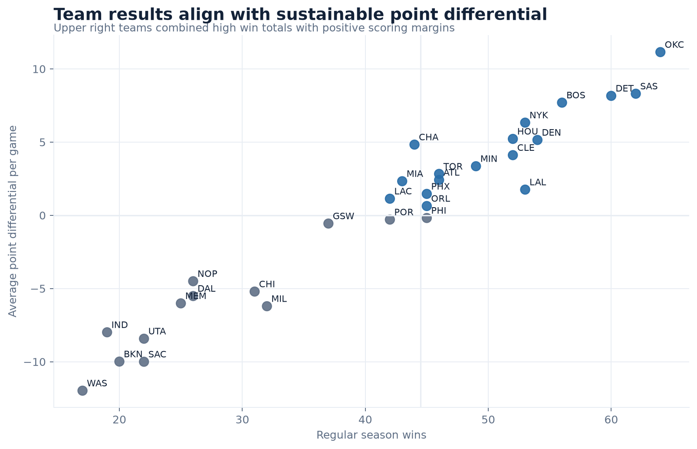

Selected work
Data systems built to be trusted
Production focused data engineering projects with clear business questions, reliable pipelines, tested data contracts, and visible analytical results.
Projects
Detailed case studies and source code
NBA Basketball Operations Warehouse
A complete 2025 to 2026 regular season warehouse with replayable raw data, idempotent loads, daily reconciliation, leakage safe player form, and basketball operations reporting.
Read the case studyAbout
I am Junyan Ye, a data professional focused on building dependable pipelines and analytical datasets that other people can use with confidence.
Each project documents the business problem, architecture, quality controls, real results, and engineering decisions behind the work.
Review my GitHub profile